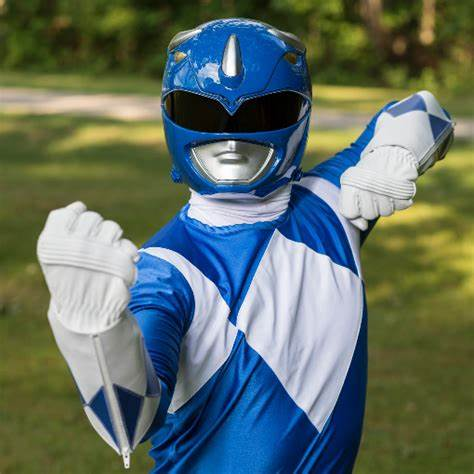
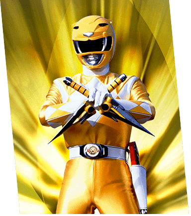
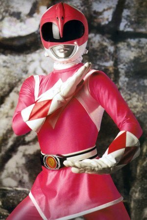
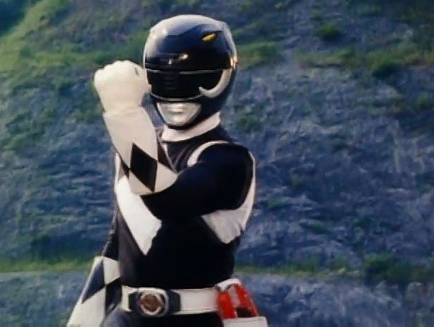

Billy Cranston
é o gênio do grupo, utilizando sua inteligência para criar gadgets e estratégias em batalha.
Trini Kwan
é uma lutadora habilidosa, com um forte senso de justiça e uma conexão profunda com suas habilidades marciais.
Jason Scott

o líder dos Power Rangers, é forte e destemido, sempre pronto para proteger seus amigos e enfrentar o mal.
Kimberly Ann
é uma atleta e lutadora habilidosa, conhecida por sua graça e determinação em proteger a Terra.
Zack Taylor
é o dançarino do grupo, utilizando seu estilo de luta baseado em movimentos de dança e acrobacias para combater vilões.